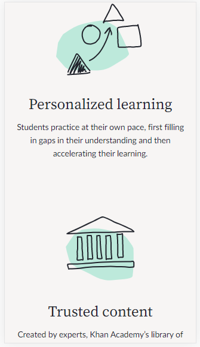

Alignment
w3schools.comw3 Schools
The text and buttons follows a line down the page. Alignment helps the viewer to not be distracted by uneaven formatting.
Visual Hierarchy
tastyshop.comTasty
They have a good use of "white" space by having an appropriate amount of room between text and buttons
Repetition
khanacademy.orgKhan Academy
They have styles, colors and patterns that repeat. This gives the site a unified look, and helps users know what to expect.